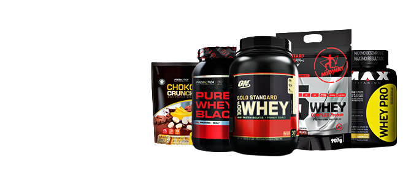

Suplementos Mais Famosos
Whey
Creatina

Pré Treino
O que os Suplementos fazem?
Os suplementos funcionam como um complemento da alimentação. Na maioria dos casos, são indicados para pessoas que apresentam uma carência muito grande de determinado nutrientes
Fortalecimento da imunidade do organismo
Suporte a praticantes de atividades físicas
Suplementação em determinadas doenças
Tudo isso para que você, leitor, possa aprender algo novo, com confiança, e com cada texto possa melhorar sua vida e treino em algum aspecto
Suplementos :

Tipos de Suplementos
Tipos de Suplementos :
Os suplementos não são todos iguais e nem são utilizados apenas por quem vai a academia. Conheça os diferentes tipos:
Suplementos hipercaloricos
- Esses são cheios de calorias. Assim, sua composição é rica em gorduras, vitaminas, proteínas, carboidratos e minerais. Porém, cuide com os excessos de gordura e calorias, que podem levar ao sobrepeso.
Suplementos termogênicos
- Esses suplementos são ideais para quem pretende emagrecer, já que sua principal função é acelerar o metabolismo. Por isso, sua composição é, geralmente, feita de guarana, cafeéna, citrus, entre outras substancias.
Suplementos proteicos
- Perfeitos para quem é adepto de fazer musculação, os proteicos são feitos de proteinas que ajudam o musculo a se recuperar depois do treino.
Suplementos antioxidantes
- Quando fazemos exercicios, nosso corpo produz radicais livres naturalmente. Os antioxidantes ajudam a combater o efeito dos radicais livres nas células.
Suplementos hormonais
- São os tipos de suplementos voltados para estimular a produção de algum hormônio, tais como: tiroxina, estrogênio, entre outros.
Suplementos poli vitamínicos e minerais
- Esses complementam as vitaminas e os minais como, por exemplo, o cálcio, o ferro, o magnésio, entre outros.
Suplementos probióticos
- Micro-organismos vivos que são suplementados para ajudar em diversos problemas relacionados ao intestino.